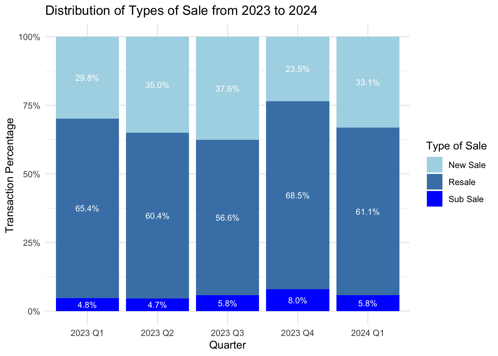

pacman::p_load(tidyverse, ggrepel, ggthemes, hrbrthemes, patchwork)Take-home Exercise 2
overview
In this take-home exercise 02 , we are required to:
select one of the Take-home Exercise 1 prepared by our classmates,
critique the submission in terms of clarity and aesthetics,
prepare a sketch for the alternative design by using the data visualization design principles and best practices we have learned in Lesson 1 and 2,
remake the original design by using ggplot2, ggplot2 extensions and tidyverse packages.
1. Original data preparation
1.1 Loading R package
1.2 Importing datasets
residential2024Q1 <- read_csv('data/ResidentialTransaction20240414220633.csv', show_col_types = FALSE)residential2023Q1 <- read_csv('data/ResidentialTransaction20240308160536.csv', show_col_types = FALSE)
residential2023Q2 <- read_csv('data/ResidentialTransaction20240308160736.csv', show_col_types = FALSE)
residential2023Q3 <- read_csv('data/ResidentialTransaction20240308161009.csv', show_col_types = FALSE)Warning: One or more parsing issues, call `problems()` on your data frame for details,
e.g.:
dat <- vroom(...)
problems(dat)residential2023Q4 <- read_csv('data/ResidentialTransaction20240308161109.csv', show_col_types = FALSE)1.3 Add “Quarter” column
For our analysis in the later part of this exercise, we need to add new columns “Year” and “Quarter” to indicate which quarter of the year each transaction took place in.
For 2024 Q1 data:
residential2024Q1 <- cbind(residential2024Q1, Quarter = 'Q1')For each quarter of 2023 data:
residential2023Q1 <- cbind(residential2023Q1, Quarter = 'Q1')
residential2023Q2 <- cbind(residential2023Q2, Quarter = 'Q2')
residential2023Q3 <- cbind(residential2023Q3, Quarter = 'Q3')
residential2023Q4 <- cbind(residential2023Q4, Quarter = 'Q4')Combine all 4 quarters of 2023, to get a dataset with all transactions in 2023:
show code
residential2023 <- rbind(residential2023Q1, residential2023Q2, residential2023Q3, residential2023Q4)1.4 Check for duplicates
The code chunk below shows that there are no duplicates in the 2024 Q1 transaction data:
show code
residential2024Q1[duplicated(residential2024Q1),] [1] Project Name Transacted Price ($)
[3] Area (SQFT) Unit Price ($ PSF)
[5] Sale Date Address
[7] Type of Sale Type of Area
[9] Area (SQM) Unit Price ($ PSM)
[11] Nett Price($) Property Type
[13] Number of Units Tenure
[15] Completion Date Purchaser Address Indicator
[17] Postal Code Postal District
[19] Postal Sector Planning Region
[21] Planning Area Quarter
<0 rows> (or 0-length row.names)1.5 Check for missing values
The colSums() function in the base package is used to check for missing values. The output of the code chunk below shows there are no missing values in the 2024 transaction data.
show code
colSums(is.na(residential2024Q1)) Project Name Transacted Price ($)
0 0
Area (SQFT) Unit Price ($ PSF)
0 0
Sale Date Address
0 0
Type of Sale Type of Area
0 0
Area (SQM) Unit Price ($ PSM)
0 0
Nett Price($) Property Type
0 0
Number of Units Tenure
0 0
Completion Date Purchaser Address Indicator
0 0
Postal Code Postal District
0 0
Postal Sector Planning Region
0 0
Planning Area Quarter
0 0 colSums(is.na(residential2023)) Project Name Transacted Price ($)
0 0
Area (SQFT) Unit Price ($ PSF)
0 0
Sale Date Address
0 0
Type of Sale Type of Area
0 0
Area (SQM) Unit Price ($ PSM)
6 0
Nett Price($) Property Type
0 0
Number of Units Tenure
0 0
Completion Date Purchaser Address Indicator
0 0
Postal Code Postal District
0 0
Postal Sector Planning Region
0 0
Planning Area Quarter
0 0 1.6 Check data type
A glimpse into the transaction data in 2024 shows that the Sale Date column is currently in the character data type instead of the Date data type:
1.7 Add “Year” column
For our analysis in the later part of this exercise, we also add a new column “Year” to indicate which year each transaction took place in.
2.Data Visualization Critique
2.1 Original Design
the plot below shows the original design
2.2 Critique : Clarity and Aesthetics
Clarity:
Though it analysis the distribution according to type of sales, but the plot only focus on one quarter of 2024, it will be more helpful if can compare the 2023 to 2024 besed on the data we have.
The y-axis label and tick marks could use some formatting. It’s generally more readable to format large numbers with either thousands separators or in millions of dollars.
The plot shows a significant number of outliers, especially for the ‘Resale’ type. While it’s important to display outliers to show the full range of data, it might also be useful to analyze if additional filtering is needed or if a different type of plot might represent the data more effectively.
Given the density of points in the ‘Resale’ type of sale, it might be useful to consider alternative plot types or additional plots that break down this category further to provide more insights into the underlying data.
Aesthetics:
The grid lines are quite prominent and might draw attention away from the data itself. Consider lightening the grid lines or using a subtler color to ensure that the data stands out more.
The overall simplicity of the plot is good for focus, but a minor tweak to the aesthetics such as adjusting the background color or grid lines could make it more visually appealing.
3.Makeover Design
Following by the steps above, we combine all the datasets into a single data frame. This will make it easier to analyze the data across different quarters.
The original plot shows only the distribution of transacted price by types of sales in 2024 Q1 .In the makeover, we will analysis the relationships of transacted prices and type of sale across different quarters from 2023 to 2024Q1.
show code
residential2023Q1 <- residential2023Q1 %>% mutate(`Sale Date` = as.Date(`Sale Date`, format = "%d %b %Y"))
residential2023Q2 <- residential2023Q2 %>% mutate(`Sale Date` = as.Date(`Sale Date`, format = "%d %b %Y"))
residential2023Q3 <- residential2023Q3 %>% mutate(`Sale Date` = as.Date(`Sale Date`, format = "%d %b %Y"))
residential2023Q4 <- residential2023Q4 %>% mutate(`Sale Date` = as.Date(`Sale Date`, format = "%d %b %Y"))
residential2024Q1 <- residential2024Q1%>% mutate(`Sale Date` = as.Date(`Sale Date`, format = "%d %b %Y"))show code
library(dplyr)
library(lubridate)
residential2023Q1$Quarter <- "2023 Q1"
residential2023Q2$Quarter <- "2023 Q2"
residential2023Q3$Quarter <- "2023 Q3"
residential2023Q4$Quarter <- "2023 Q4"
residential2024Q1$Quarter <- "2024 Q1"
all_ <- bind_rows(residential2023Q1, residential2023Q2, residential2023Q3, residential2023Q4, residential2024Q1)Makeover (1)
It also allows for the observation of trends over successive quarters, providing insights into how market conditions are evolving, whether certain types of sales are becoming more or less expensive, and how stable prices are in each sales category.
library(ggplot2)
ggplot(all_, aes(x = Quarter, y = `Transacted Price ($)`, fill = `Type of Sale`)) +
geom_boxplot(outlier.colour = "gray", outlier.shape = 1, width = 0.5) + # Customize outliers
scale_fill_manual(values = c("New Sale" = "lightblue", "Resale" = "steelblue", "Sub Sale" = "blue")) +
labs(title = "Distribution of Transacted Prices by Type of Sale from 2023 to 2024",
x = "Quarter",
y = "Transacted Price ($)") +
theme_minimal() +
theme(axis.text.x = element_text(angle = 45, hjust = 1),
legend.title = element_blank()) +
scale_y_log10(labels = scales::dollar_format(scale = .000001, suffix = "M")) Observation:
The interquartile range (IQR), shown by the height of each box, gives an indication of the middle 50% of the data’s spread. A taller box suggests greater variability among transacted prices within that quarter and sale type.
Q2 2023 shows particularly high variability in New Sales compared to other quarters, as indicated by its relatively taller box and wider whiskers.
Sub Sales tend to have less variability compared to New Sales and Resales, with generally shorter boxes across all quarters.
in Q3 and Q4 of 2023, the median prices across all types of sales appear very close, suggesting a convergence in market prices regardless of the type of sale.
There’s a notable presence of outliers, especially in New Sales, which may indicate occasional sales at significantly higher prices due to unique properties or market conditions.
Makeover (2)
The bar chart format provides a clear visual representation of differences in transaction volumes, making it straightforward to identify trends and peaks. It helps in understanding which segments are most active and how they change over time.
Warning: Using `size` aesthetic for lines was deprecated in ggplot2 3.4.0.
ℹ Please use `linewidth` instead.library(dplyr)
price_summary <- all_ %>%
group_by(Quarter, `Type of Sale`) %>%
summarise(Total_Transacted_Price = sum(`Transacted Price ($)`, na.rm = TRUE), .groups = 'drop') %>%
mutate(Total_Transacted_Price_Millions = Total_Transacted_Price / 1e6)
average_prices <- price_summary %>%
group_by(`Type of Sale`) %>%
summarise(Avg_Price = mean(Total_Transacted_Price_Millions), .groups = 'drop')
# Plot
ggplot(price_summary, aes(x = Quarter, y = Total_Transacted_Price_Millions, fill = `Type of Sale`)) +
geom_bar(stat = "identity", position = "dodge") +
scale_fill_manual(values = c("New Sale" = "lightblue", "Resale" = "steelblue", "Sub Sale" = "blue")) +
geom_hline(data = average_prices, aes(yintercept = Avg_Price, color = `Type of Sale`), linetype = "dashed", size = 1) +
scale_color_manual(values = c("New Sale" = "lightblue", "Resale" = "steelblue", "Sub Sale" = "blue")) +
geom_text(data = average_prices, aes(x = 3.5, y = Avg_Price, label = sprintf("%.2f M", Avg_Price), color = `Type of Sale`),
vjust = -0.5, size = 3.5) +
labs(title = "Total Transacted Prices by Type of Sale from 2023 to 2024",
x = "Quarter",
y = "Total Transacted Price (Millions of $)") +
theme_minimal() +
theme(axis.text.x = element_text(angle = 45, hjust = 1),
legend.title = element_blank())Observation:
Resale market dominates most quarters, suggesting that the resale market is more active than the new and sub sale markets. This might reflect a mature orstable property market where existing properties are changing hands more frequently.
Sub Sale is the smallest segment across all quarters, indicating a limited market activity in this category.
The reference lines show the average transacted price of resale, resale and sub sale from 2023 to 2024Q1.
Makeover (3)
This stacked bar chart can serve as a strategic tool for analyzing the dynamics of the real estate market, offering a clear visualization of how different types of sales distribute across multiple periods.

all_data <- all_ %>%
group_by(Quarter, `Type of Sale`) %>%
summarise(Count = n(), .groups = 'drop')
# Calculate total transactions per quarter
quarter_totals <- all_data %>%
group_by(Quarter) %>%
summarise(Total = sum(Count), .groups = 'drop')
# Join totals back to the transaction data
all_data <- all_data %>%
left_join(quarter_totals, by = "Quarter") %>%
mutate(Percentage = (Count / Total) * 100)
library(ggplot2)
# Plot
ggplot(all_data, aes(x = Quarter, y = Percentage, fill = `Type of Sale`)) +
geom_bar(stat = "identity", position = "fill") +
scale_fill_manual(values = c("New Sale" = "lightblue", "Resale" = "steelblue", "Sub Sale" = "blue")) +
geom_text(aes(label = sprintf("%.1f%%", Percentage)), position = position_fill(vjust = 0.5), size = 3, color = "white") +
labs(title = "Distribution of Types of Sale from 2023 to 2024",
x = "Quarter",
y = "Transaction Percentage ",
fill = "Type of Sale") +
scale_y_continuous(labels = scales::percent_format()) +
theme_minimal()Observation:
New Sales show a relatively small portion of the total transactions throughout the period, ranging from 4.7% to 8.0%. There is a slight increase in the proportion of New Sales in 2023 Q4 and 2024 Q1 compared to earlier quarters.
Resales make up the majority of transactions, though their percentage fluctuates across the quarters. They peak in 2023 Q3 at 68.5% and have the lowest in 2023 Q1 at 56.6%.
Sub Sales are the least frequent, consistently representing a small fraction, but there’s a noticeable increase to 8.0% in 2023 Q4.
4. Learning Points
Data is crucial for the visualization analysis. In R studio, I encountered few times stuck during the data preparation, we need to be aware the notice generated by the system during running the code. It is important to understand the data and apply the use of the data for further analysis.
Clarity and aethetics are important. Overcomplicating a visual with excessive decorative elements can detract from the data’s message. For example, If too many colors or annotations on the visulization may cause the plot not easy to interpret.
Referencing classmates’ work gives me more perspective and ideas how the visulaization analysis can be presented. It’s a valuable way to gain insights into different approaches to data presentation and to learn new techniques that could improve on own work.